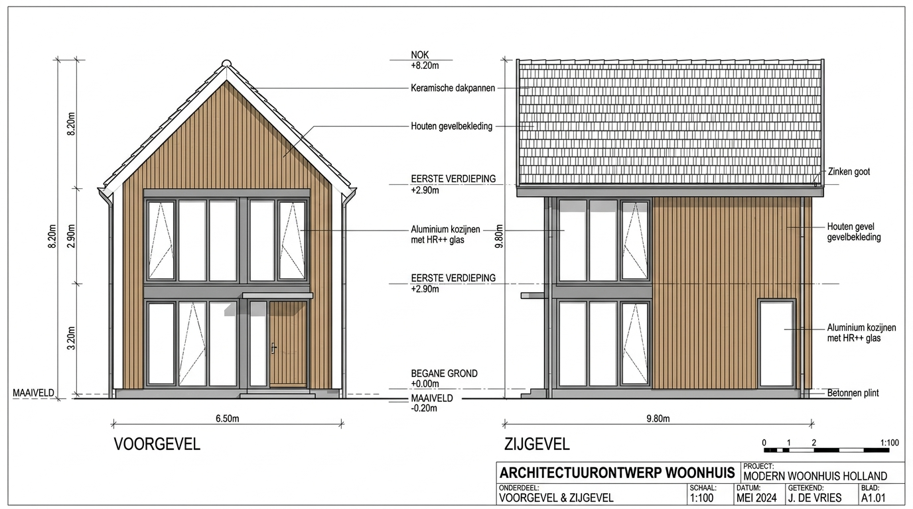
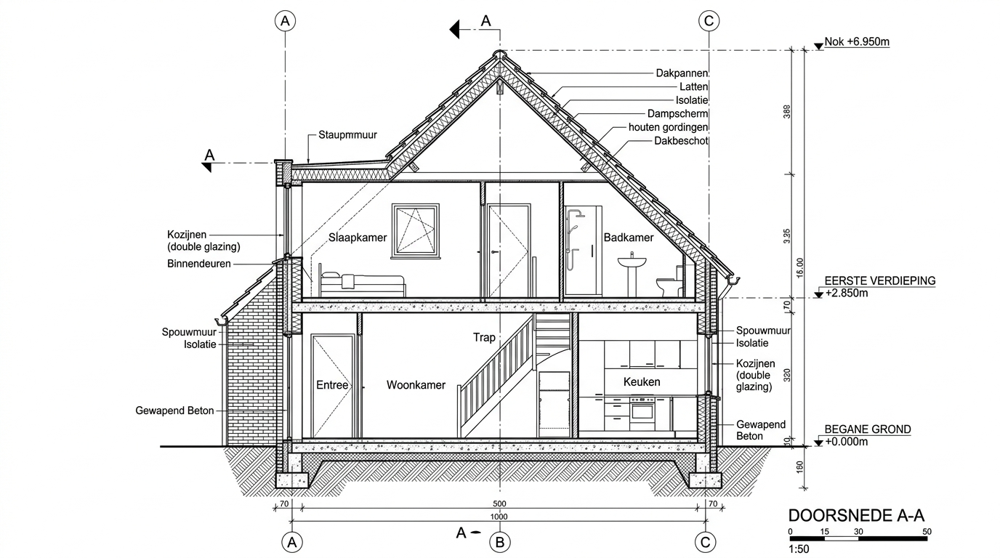
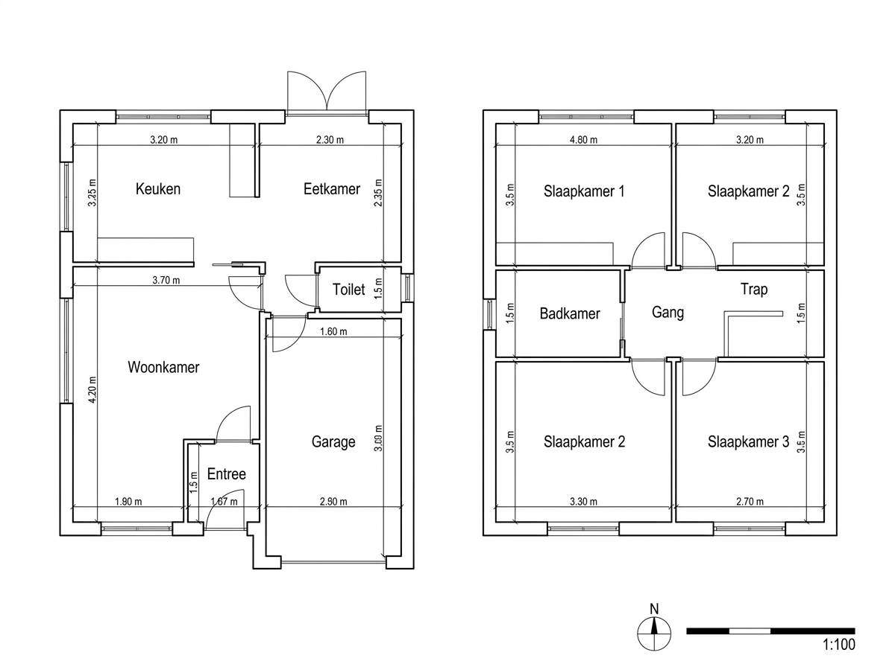

The Renovation & Conversion Challenge
Veterinary and specialized medical clinics carry intricate spatial and utility requirements that make BIM modeling from 2D scans uniquely complex:
- Scanned Blueprint Inaccuracies: The source drawings were over 25 years old — containing distorted paper scan angles, faded dimension strings, and hand-written annotations in German.
- Clinical Zoning & Acoustic Partitioning: Surgery rooms, laboratory spaces, recovery wards, and pet waiting areas required specific wall thicknesses and acoustic barrier classifications.
- IFC Data for German Renovation: The project architect needed an IFC 4.3 model with clean thermal volume boundaries to simulate heating, ventilation, and insulation upgrades under German GEG standards.
The Ribhus Technical Approach
Our team tackled the legacy reconstruction through our proprietary dimensional reconciliation workflow:
- Scan Rectification & Grid Alignment: De-skewed and calibrated high-resolution PDF scans against overall perimeter dimensions.
- Parametric Wall Reconstruction: Modeled load-bearing masonry walls and interior partition assemblies with exact material layers and U-values.
- Spatial Zone Classification: Defined each room as an ArchiCAD Zone with net floor area, ceiling height, and hygienic finish parameters.
- MEP Penetration Provisions: Reserved service shafts and ceiling voids for medical gas lines, specialized drainage, and ventilation ducts.
- IFC 4.3 Schema Validation: Checked model against Solibri rulesets to guarantee clash-free data exchange with the German engineering consultants.
Source Drawings & BIM Reconstruction Gallery
Side-by-side technical progression from legacy 2D blueprints to coordinated 3D BIM sections:
Original Scanned Blueprint & Dimension Calibration

Coordinated Exterior Elevation & Window Openings
Longitudinal Section Showing Ceiling Voids & Slab Levels
Reconstructed Floor Plan with Clinical Room ZonesExisting Building BIM Verification Protocol
Converting legacy paper scans into BIM requires precise engineering reconciliation. Where historical dimensions show discrepancies, Ribhus triangulates diagonals and aligns structural centerlines to ensure absolute geometric accuracy.